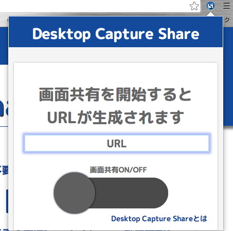
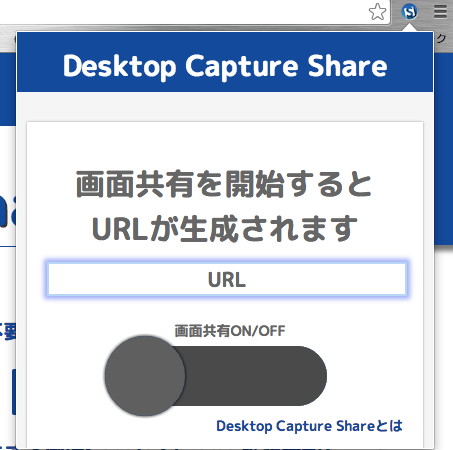

Desktop Capture Share

ログイン不要な画面共有アプリケーションです。
画面共有をする側はGoogle Chrome 拡張機能をインストールする必要があるので、
上記リンクからインストールしてください。
※閲覧をする側はインストール不要です。
Google Chromeのみ動作をサポートしています。
How to Use
拡張機能のインストール後、
下記の操作で画面を共有することができます。
- 1.
- Google Chromeの右上に表示されたアイコンをクリックし、ウィンドウを開く。
- 2.
- 画面共有ON/OFFのボタンをクリックし、画面共有を開始する。
- 3.
- 画面の共有ポップアップが表示されるので、共有する画面を選択する。
- 4.
- 再度アイコンをクリックし、ウィンドウを開く。
- 5.
- URLが生成されているので、そのURLをコピーしてシェアする。

Contact
お問い合わせはこちらへお願いします。
itinao@gmail.com
拡張機能のインストール後、
下記の操作で画面を共有することができます。
- 1.
- Google Chromeの右上に表示されたアイコンをクリックし、ウィンドウを開く。
- 2.
- 画面共有ON/OFFのボタンをクリックし、画面共有を開始する。
- 3.
- 画面の共有ポップアップが表示されるので、共有する画面を選択する。
- 4.
- 再度アイコンをクリックし、ウィンドウを開く。
- 5.
- URLが生成されているので、そのURLをコピーしてシェアする。

お問い合わせはこちらへお願いします。